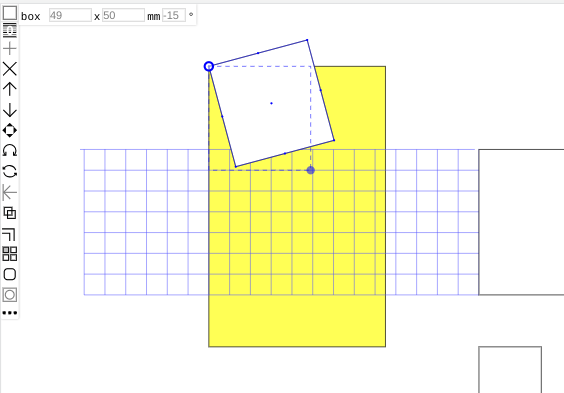
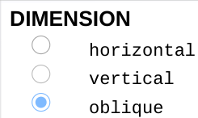

The document tool displays the DRAWING information - size, orientation and scale. You set these when you started a new drawing.
Draft is a simple but functional 2D drafting application written as a PWA - a progressive web app.
PWAs can be run online like any web app but can also be installed on your device via the menu in your browser.
The app uses SVG - scalable vector graphics - and is general-purpose but especially useful for technical drawings.
You can select various drawing sizes up to A4 in portrait or landscape orientations and you can draw to scale, organising drawings on up to 10 layers. Accurate drawing is aided by 'snap' to drawing elements, to a grid or orthogonally.
Tap links (in blue) to jump to particular topics.
Toolboxes appear on the left of the screen with either drawing tools or editing tools.
Whichever toolbox is visible there will be the styles box at the top-left with layers below it.
While drawing or editing elements you will often have information at the top of the screen, and sometimes you will interact with
dialog boxes which appear at the top left corner.
At the top-right corner is the more button for other options.
The sequence is draw, select, edit and save.

Drawing is slightly different for the various drawing tools but usually involves tapping or dragging to position and size a drawing element. You use a mouse or a touch screen. The draw toolbox also includes tools for loading and saving files and controlling your view of the drawing.
The document tool displays the DRAWING information - size, orientation and scale. You set these when you started a new drawing.
You can choose a grid size and whether to 'snap' elements to the grid, and there are buttons for saving drawings, starting new drawings and loading saved ones - see the files section.

The view controls let you zoom in or out (doubling or halving the magnification) or quickly return to the initial magnification and drawing position after zooming or moving around the drawing with the pan tool. The zoom tools are single-tap but you drag the drawing after tapping pan.

The curve tool lets you draw smoothed Bezier curves by dragging and the curve is drawn when you release the mouse button or lift your finger or stylus from a touchscreen.
Use the line tool to draw lines and shapes. Drag to draw a line segment. If you just want a single line, tap again at the end point. Otherwise, lifting the pointer ends the first segment and starts the next one.
A tap at the end point finishes the line(s) and there is a limit of 10 segments. If you end a segment close to the start of the lines you will have a closed polygonal shape.
While you are dragging a line segment you will see its length and direction at the top of the screen. Directions are shown as on a compass - degrees clockwise from 'north' at the top.
Next to this information is a 'FINISH' button. Tapping this will end the line in the same way as a double-tap.
The box tool draws rectangles and squares. As you drag from a corner, the width and height will be shown and there is a degree of 'snap' making it easy to draw a square.
Draw circles or ellipses with the oval tool. This is very like drawing an box, but you start at the centre. Again, it is easy to constrain the oval to be circular.

The arc tool is for drawing circular arcs.You are prompted to drag from the start to the centre of the arc.
Often the arc will start from an existing node such as the end of a line.
When you release at the centre a blue radius is drawn with small arrows indicating clockwise or anticlockwise rotation and you can drag the radius to the end of the arc.
The radius and arc angle appear at the top of the screen.
To add text to a drawing, tap where you want it to start then type into the dialog which appears when you tap the text tool, then tap the TEXT button and your text will appear in the drawing.


You can use the dimension tool to add dimensions to drawing elements. Dimensions are 'attached' to nodes such as the ends of line segments or the corners of a box.
You will see prompts to tap on the start and end nodes of the element you are dimensioning, then to drag the blue guide line to where you want the dimension line drawn.
If the start and end points are not aligned horizontally of vertically, you must choose whether to draw the dimensiion orthoganally or obliquely (aligned with the element).
Tap the DIMENSION button to move on to positioning the dimension.
Dimensions are associated with the elements they are attached to and move with elements if they are moved and are recalculated if elements are resized. You cannot, though, have dimensions attached to separate elements.


Draft allows you to combine a number of drawing elements - boxes, lines, ovals, text, etc. - into sets A set can be any more complex item that you might want to repeat easily or which you might use in other drawings.
There is more about sets below, but this tool is how you add a set to your drawing: it brings up a list of the sets you have available and the one you choose is added - easy!.

Tapping any drawing element will select it allowing you to view its properties and move, edit or delete it if you wish. Blue guides are shown: lines denoting the shape of the element, a circle mover handle, one or more sizer handles, and small dots at nodes. The node dots are reminders to help you snap to element nodes, the sizer(s) can be dragged to resize or reshape elements, while the mover can be dragged to move the element and can act as an axis for rotating or mirroring it. When you select elements the drawing tools are replaced by editing tools . In this example the selected box has spin (it has 30° rotation) but the sizing box remains un-rotated to aid orthogonal snapping.
The selected element's style is reflected in the style box at the top left and its size and spin are shown in the information panel. When no elements are selected the style box shows the current default styling, used for new drawing elements.
You can select more then one element at a time, by tapping on the ones you want or by dragging a selection box around them. In this case styling and sizes differ from one element to another so no styling or sizes are shown, while blue rectangles indicate which elements are selected. You can drag them all at once or perform other operations such as aligning them. Tapping any blank part of the drawing cancels the selection and switches back to the drawing tools.
You can make changes to any selected drawing element, including the styling of the element or which layer it appears on, but styles and layers are described below.
The add tool is used to add segments to curves, lines or shapes. Tap add then tap a node.
A new node will be inserted or appended after the node you choose and can then be dragged if you wish.
The reverse is remove. This tool is used to remove nodes (and thus segments) from curves, lines and shapes or to delete whole elements or all selected elements.


Elements are drawn in order and elements early in the order my be oabscured by subsequent elements.
These tools bring a selected element forward or push it back, changing the order.
The move tool brings up an dialog where you can say how far you want the selected element(s) to move using either cartesian or polar coordinates.
Cartesian coordinates move elements to the right and/or down (or left and up if negative values are entered)
while polar coordinates move the selection a given distance in a particular direction (equivalent to compass bearings).

To rotate elements use the spin tool. This brings up the spin dialog for you to say how much you want to rotate an element or collection of elements.
Enter a number of degrees of (clockwise) roatation. To spin anticlockwise use a negative angle.
Each element is rotated about its mover handle and if more than one element is selected they are all rotated around the handle of the first element selected.
Spin here is relative - if and element has already been rotated, its spin is adjusted by the amount you enter.
You can also set the spin or rotation of a selected element by entering a number of degrees (typically in the range +/-180) in the last information box at the top of the screen.


The flip tool reverses the orientation of an element either left-to-right or top-to-bottom, flipping it about its mover.
You simply tap on one of the to flip directions in the dialog.

If you have selected more than one element you can line them up using the align tool.
There are six options: align by left, right, top, bottom or centre horizontally or vertically.

Another way to duplicate an element is to double it.
Enter an offset dimension in the dialog and a parallel copy will appear.
Double lines can be quickly formed, adding the new line to the right or left (negative offsets), or you can double a box or oval bigger or smaller (negative offsets) than the original.

Use the repeat tool to create multiple copies of an element in one or two dimensions.
The copies are arranged in rows and/or columns.
Enter the total number you want in a row and/or the number of rows, along with the horizontal and/or vertical offset(s).
As in the move dialog, use negative offsets to copy to the left or upwards.

The join tool is used to combine selected elements to create a set.
Sets make it easy to add predefined figures to a drawing. They can also be saved for use in other drawings.
Draw your original figure using whatever elements you need then select these elements and tap join.
The mover handle of the first element you select will be the handle of the set.

When you select a drawing element you will often see some information about it at the topof the screen.
The information displayed varies according to the context. In this example - for a box with round corners - you have...

Also visible here are the blue guide lines which will appear during selection and editing operations.
They attach to a node when the cursor is close and help you align either horizontally or vertically with another element.
Sometimes you will see an action button after the size fields...
FINISH is an alternative way of ending a line or series of lines.
EDIT allows you to amend or add to text.
You will often see scrolling hints either below the information fields or on their own at the top of the screen.
These are intended to provide contextual help.
Dialogs can have several types of content. Some have a title button at the top which you tap to confirm settings, others just have a title.
Some have fields for you to enter numbers or text.
Some have a series of options.
Some have option icons or colours or patterns.
Dialogs disappear when you confirm a choice or, sometimes, as soon as you tap an option, and if you change your mind, just tapping somewhere outside the dialog will cancel it.
The clear button, which appears in several dialogs, is a quick way of resetting all fields. Otherwise, values will remain set which can help where you want to repeat operations for several elements.
Styles dictate the appearance of drawing elements. To see the options, tap the styles box at the top-left.

If an element is selected, the styles dialog shows the styling of the element, otherwise it shows the current defaults.
Similarly, changing the style will either affect a selected element or change the default.
The top line is for line style: lines can be continuous (solid), dashed, dotted or invisible (none);
Line ends and corners can be square or rounded and there are four pen widths - from 0.25 to 2mm.
Next is text which can be one of four typefaces, normal (fine), bold or italic in 5 sizes
The colour box after the text styles is used to set the colour of both lines and text, choosing from 64 colours.
Closed shapes such as boxes can have fill: solid, pattern or none. The default white fill looks like no fill but makes elements easier to select.
Pattern fill uses the current fill colour (the same 64 colours) for one of 15 designs.

Finally, opacity and blur apply to the whole element and each have four gradations.

You can organise drawings on just one or up to 10 layers.
The layers button shows the current layer or that of a selected element and brings up a dialog.
You can select which layer you are working on and which layers are visible, and you can give layers names.
You can also choose whether to work on just the current layer or any visible layer.
If you have an element selected the layers button shows which layer it is on. If you want to move it to another layer, tap the button and choose a layer from the list.

Here layers are used for different storeys in a building. With more than one layer visible, you can see how one level relates to another.
With just one layer visible you can see just one storey and save that floor plan for printing.
There are other ways to organise layers. One layer could be reserved for reference and guide lines,
different layers could represent phases of development or different utilities such as power, water and drainage.
It's up to you - fill your boots!
Suppose you are drawing an electronics circuit with several diodes.
You can draw one diode using a black triangle and a line, use repeat to draw a number of copies, then select each in turn, dragging them to new locations, or...
You can select both the triangle and the line (starting by tapping the centre of the apex of the triangle to use as a handle) and tap join.
Name the set 'diode' then you can place as many diodes as you like using the set tool.
If you create a few different sets while drafting a drawing or diagram you can easily save them for use another time.
Tap the document tool then choose SAVE. Choose the sets you want to include, enter a name ("electronics"?) and save your set (or set of sets)
Next time you want to produce a similar drawing or diagram, choose LOAD from the document menu and find the set file to import.


Electronics symbols is on idea for a set of sets but there are many, many more...
as an architect I would have kitchen or bathroom fittings, furniture, lighting and other electrical symbols, graphic elements like north points.
A civil engineer might have sets for drainage and utilities, street lighting, road signs,...
Whatever your discipline, if you are drafting there will be sets you can create.
A scale drawing will often include elements which are not drawn to scale. A building plan, for example, will show all the building elements -
representing walls, doors and windows, stairs, etc - drawn to scale, but may also have a title panel where the drawing number, title and scale are shown
and a north point indicating the orientation of the plan.
These graphic elements should appear the same size on any drawing, regardless of scale, and Draft has an easy way to achieve this...
If you use the join tool to define a set in a drawing at 1:1 scale (full-size), the set will be classed as a graphic.
You might, for instance, use a 25mm diameter circle with an 'N' to make a north point. If you then add this to a 1:50 scale plan,
the circle will still be 25mm diameter on the drawing whereas if it were a normal set it would be drawn to scale as a 0.5mm dot!
It is useful to have a sets file defining a number of graphic sets.
You can LOAD drawings - the drawing data - or sets (or sets of sets).
Loading sets makes them available for use in your drawing, while loading a drawing replaces any current drawing, so remember to SAVE first!
You can also load a background image for use as a guide or reference when drawing. Background images are not part of a drawing and are not saved.
You can SAVE the drawing data - defining the whole drawing, the current view as a file you can print, or one or more sets as described above.
Drawing data and sets are each saved in JSON format (JavaScript Object Notation) while drawings for viewing or printing are saved in SVG format.
View them on screen and choose the 'print' option.
Setting the print options to fit the paper (no margins) at default or 100% scale will usually print a drawing accurately to scale.
You also have the option of 'printing' to PDF - possibly a more portable format.
Files could for example be saved in a 'Draft' folder with sub-folders for drawings and sets, or in individual folders for different projects. It's up to you.
The more button gives access to four additional options...
Help: you're looking at it!
Reload: Simply reloads the current drawing - useful if something has gone a bit wrong (Draft is under constant development).
Reset: For when things go more than a bit wrong (the emergency button) - restarts the app. You should not lose anything.
Feedback: email me with suggestions, complaints, questions, ideas, and I will try to respond.